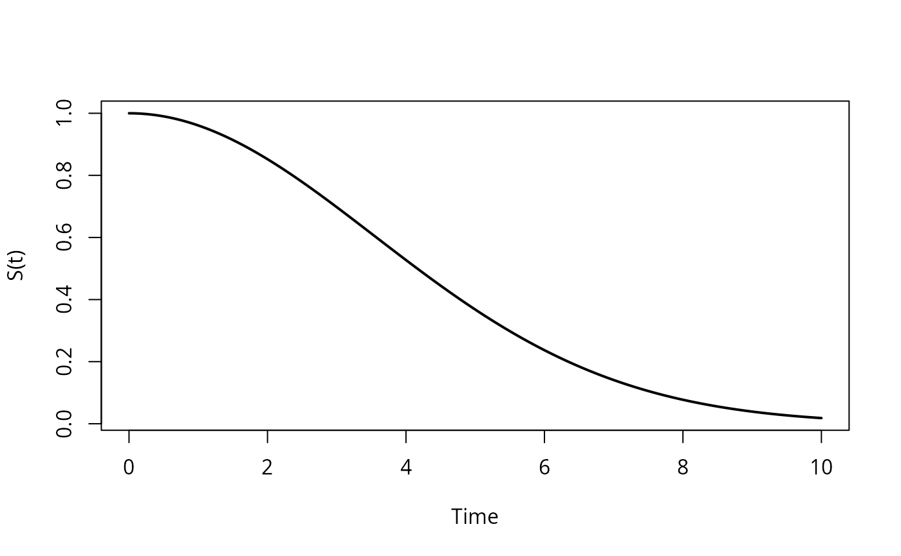
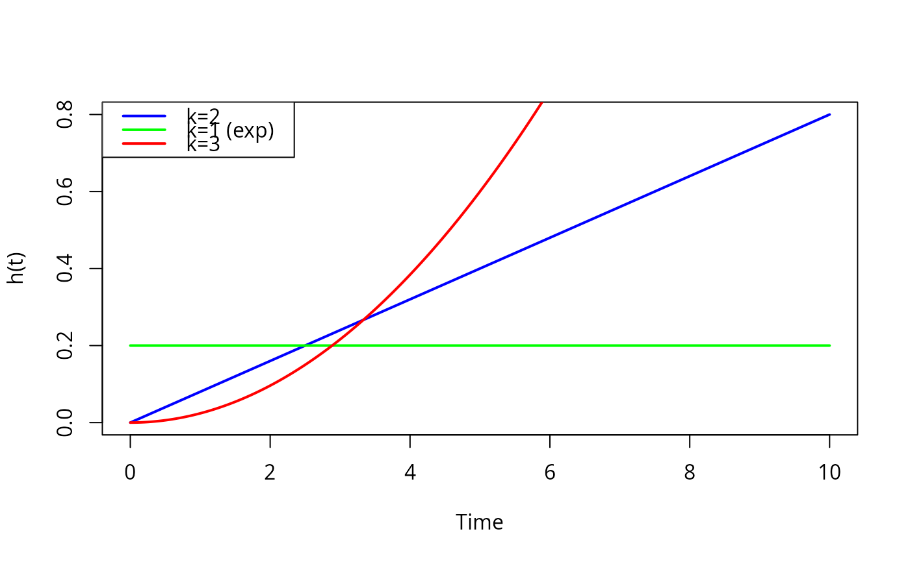
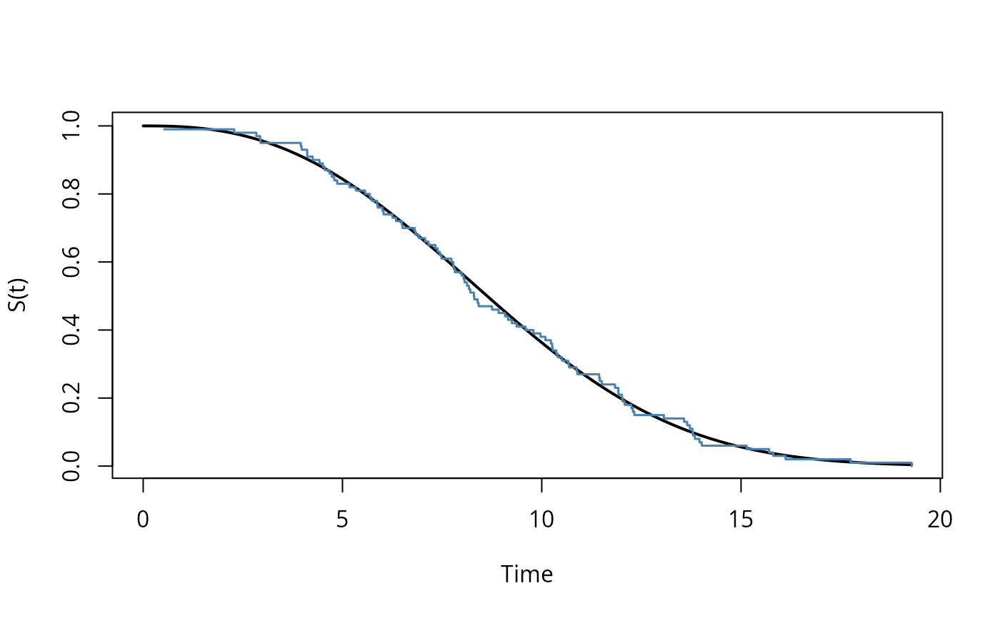

Visualizes the survival, hazard, or cumulative hazard function of a DFR distribution. Optionally overlays empirical estimates from data.
Arguments
- x
A
dfr_distobject- data
Optional data frame with survival data for empirical overlay
- par
Parameter vector. If NULL, uses object's stored parameters.
- what
Which function to plot:
- "survival"
S(t) = exp(-H(t))
- "hazard"
h(t) - instantaneous failure rate
- "cumhaz"
H(t) - cumulative hazard
- xlim
x-axis limits. If NULL, determined from data or defaults to c(0, 10).
- n
Number of points for smooth curve (default 200)
- add
If TRUE, add to existing plot
- col
Line color for theoretical curve
- lwd
Line width for theoretical curve
- empirical
If TRUE and data provided, overlay Kaplan-Meier estimate
- empirical_col
Color for empirical curve
- ...
Additional arguments passed to plot()
Value
Invisibly returns the plotted values as a list with elements
t (time points) and y (function values).
Details
When empirical = TRUE and data is provided, overlays:
For survival: Kaplan-Meier estimate (step function)
For cumhaz: Nelson-Aalen estimate (step function)
For hazard: Kernel-smoothed hazard estimate
Examples
# Plot survival function for Weibull distribution
weib <- dfr_weibull(shape = 2, scale = 5)
plot(weib, what = "survival", xlim = c(0, 10))

# Overlay hazard functions for different shapes
plot(weib, what = "hazard", xlim = c(0, 10), col = "blue")
weib_k1 <- dfr_weibull(shape = 1, scale = 5) # Exponential
plot(weib_k1, what = "hazard", add = TRUE, col = "green")
weib_k3 <- dfr_weibull(shape = 3, scale = 5) # Steeper wear-out
plot(weib_k3, what = "hazard", add = TRUE, col = "red")
legend("topleft", c("k=2", "k=1 (exp)", "k=3"),
col = c("blue", "green", "red"), lwd = 2)

# Compare fitted model to data
set.seed(123)
true_weib <- dfr_weibull(shape = 2.5, scale = 10)
sim_data <- data.frame(t = sampler(true_weib)(100), delta = 1)
solver <- fit(dfr_weibull())
result <- solver(sim_data, par = c(2, 8))
fitted_weib <- dfr_weibull(shape = coef(result)[1], scale = coef(result)[2])
plot(fitted_weib, data = sim_data, what = "survival",
xlim = c(0, max(sim_data$t)), empirical = TRUE)
